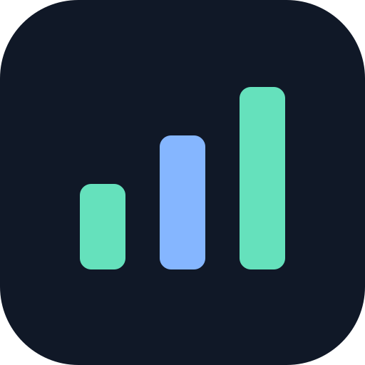

Delivery progress
74%
18 of 24 milestones complete

TMT11DASHBOARDDEMO DATAYOUR POCKET OVERVIEW
An engineering dashboard experiment, ready for your phone.
Open this page in Chrome to add it to your home screen.
Delivery progress
74%
18 of 24 milestones complete
Tests passing
96%
Latest simulated test run
Open risks
3
1 high · 2 medium priority
STEADY PROGRESS
WHAT'S NEXT
Flight controller · In progress
Platform software · Planned
Hardware · At risk
NEEDS ATTENTION
Component lead times
A sample hardware dependency could affect prototype readiness. Confirm alternatives before the next review.
HIGH PRIORITY · DEMO